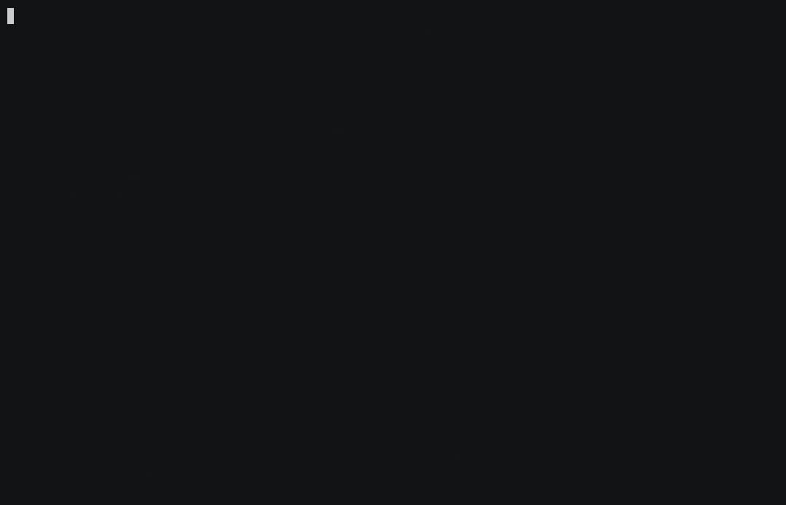

⌨️ Terminal native
Fast keyboard workflows, Vim navigation, fuzzy filtering, command mode, and contextual help.
terminal-native · local-first · git-friendly
Arbor brings familiar API request and testing workflows to a keyboard-first terminal UI, with k9s-style navigation and readable YAML files that belong in Git. Define requests, environments, and scenarios once, then run the same definitions from the TUI, CLI, or CI.
brew install jagadishg/tap/arbor

Fast keyboard workflows, Vim navigation, fuzzy filtering, command mode, and contextual help.
No account, cloud workspace, or background service. Your API lives on your machine.
Requests, environments, and scenarios are ordinary YAML files you can diff and review.
The TUI, command line, and CI execute the exact same definitions.
Resolve values from env vars or the OS keychain, with automatic redaction and reveal-on-demand.
Descriptions on every resource and --json output make a workspace legible to coding agents.
Same workspace, same definitions — explored two ways.
Create a workspace, add a request, and run it — then open the TUI or let a coding agent build the workspace from your API code.
# install
brew install jagadishg/tap/arbor
# create a workspace, a collection, and a request
arbor init myapi && cd myapi
arbor new collection users -d "User endpoints"
arbor new request users.get -m GET -u '{{base_url}}/users/1' -n "Get user"
# definitions live in .arbor/ and are ready for Git
arbor validate
# explore and run from the CLI
arbor list requests
arbor describe users.get
arbor run users.get
# install the skill for coding agents
arbor skill install --agent all
# or open the interactive terminal UI
arbor